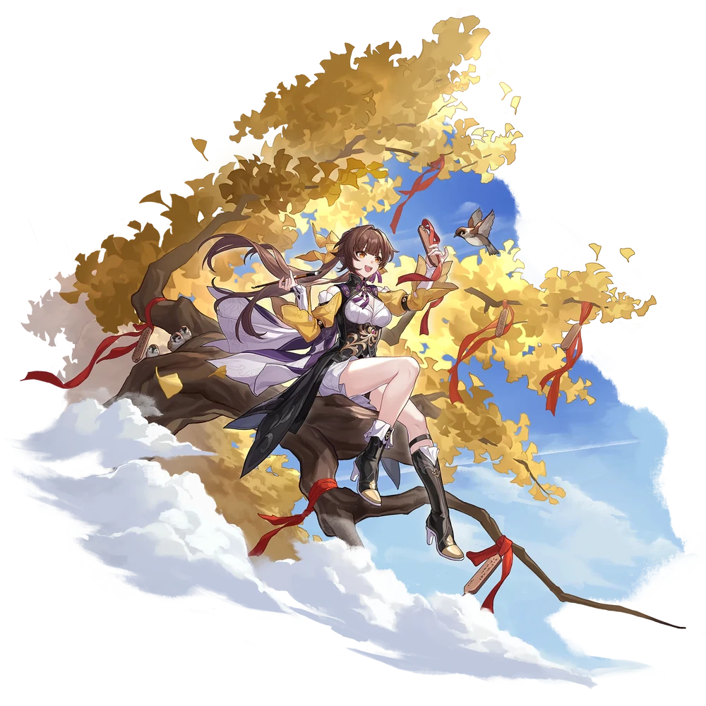
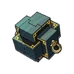
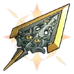

| Nome | Sushang |
|---|---|
| Elemento | Fisico | Raridade | ✦ ✦ ✦ ✦ |
| Caminho | A Caça |
| Sexo | Fêmea |
| Especie | Humano |
| Facção | O Xianzhou Luofu, O Xianzhou Yaoqing (antigo), Aliança de Xianzhou e Cavaleiros das Nuvens | Mundo | Xianzhou Yaoqing e O Xianzhou Luofu | Como obter | Qualquer Banner Warp | Data de Lançamento | 2023-04-26 | Adicionado pela primeira vez | Versão 0.70 |
Ascensões e estatísticas
| Fase de Ascensão | Level | Base HP | Base ATK | Base DEF | Base SPD |
|---|---|---|---|---|---|
| 0✦ | 1/20 | 124 | 76 | 57 | 107 |
| 20/20 | 243 | 149 | 111 | 107 | |
| 1✦ | 20/30 | 293 | 180 | 133 | 107 |
| 30/30 | 355 | 218 | 162 | 107 | |
| 2✦ | 30/40 | 405 | 249 | 185 | 107 |
| 40/40 | 468 | 288 | 213 | 107 | |
| 3✦ | 40/50 | 517 | 318 | 236 | 107 |
| 50/50 | 580 | 357 | 265 | 107 | |
| 4✦ | 50/60 | 630 | 387 | 287 | 107 |
| 60/60 | 692 | 426 | 316 | 107 | |
| 5✦ | 60/70 | 742 | 456 | 339 | 107 |
| 70/70 | 804 | 495 | 367 | 107 | |
| 6✦ | 70/80 | 854 | 526 | 390 | 107 |
| 80/80 | 917 | 564 | 418 | 107 |
| Nível | Custo de Evolução | Materiais de Ascensão do Personagem | Materiais Necessários |
|---|---|---|---|
| 0 → 1 ✦ |  3,200 3,200 |
4 | |
| 1 → 2 ✦ | 6,400 |
8 | |
| 2 → 3 ✦ | 12,800 |
2 | 5 |
| 3 → 4 ✦ | 32,000 |
5 | 8 |
| 4 → 5 ✦ | 64,400 |
15 | 5 |
| 5 → 6 ✦ | 128,000 |
28 | 7 |
Habilidades de combate
| Icone | Tipo | Nome | Descrição | Marcação | Energia | Resistência DMG |
|---|---|---|---|---|---|---|
| ATK básico | Arte Cloudfencer: Starshine | Causa DANO Físico igual a 50%–130% do ATK de Sushang a um único inimigo. | Alvo único | Geração: 20 | 30 | |
| Skill | Arte Cloudfencer: Montanha | Causa DANO Físico igual a 105%–262,5 do ATK de Sushang a um único inimigo. Além disso, há 33% de chance de ativar a Postura da Espada no golpe final, causando DANO Físico Adicional igual a 50%–125% do ATK de Sushang ao inimigo. Se o inimigo for infligido com Weakness Break , Sword Stance é garantido para ativar. | Alvo único | Geração: 30 | 60 | |
| Ultimate | Forma de Taixu: Dawn Herald | Causa DANO Físico igual a 192%–384% do ATK de Sushang a um único inimigo e imediatamente avança sua ação em 100%. Além disso, o ATK de Sushang aumenta em 18%–36% e usar sua Habilidade tem 2 chances extras de ativar a Postura da Espada por 2 turno(s). A Postura da Espada desencadeada pelas chances extras causa 50% do DMG original. | Alvo único | Custo: 120 Geração: 5 | 90 | |
| Talento | Lâmina Dançante | Quando um inimigo tem sua fraqueza quebrada no campo, o SPD de Sushang aumenta em 15%–22,5% por 2 turno(s). | Melhorar | |||
 |
Técnica | Arte Cloudfencer: Warcry | Imediatamente ataca o inimigo. Ao entrar na batalha, Sushang causa dano físico igual a 80% de seu ATK a todos os inimigos. | 60 |
Eidolons
| Icone | Nome da habilidade | Nivel | Descrição |
|---|---|---|---|
| Corte com facilidade | 1 | Depois de usar a habilidade contra um inimigo quebrado por fraqueza, regenera 1 ponto de habilidade. | |
| Refinar na labuta | 2 | Depois de ativar a Postura da Espada, o DMG recebido por Sushang é reduzido em 20% por 1 turno. | |
| Ascensão da Fama | 3 | Nível final +2, até um máximo de Lv. 15. Talento Nv. +2, até um máximo de Lv. 15. | |
| Partir com coração | 4 | O efeito de quebra de Sushang aumenta em 40%. | |
| Prevaleça via Taixu | 5 | Habilidade Nv. +2, até um máximo de Lv. 15. ATK Básico Lv. +1, até um máximo de Lv. 10. | |
| Habite como a água | 6 | O SPD Boost do Talent é acumulável e pode acumular até 2 vezes. Além disso, depois de entrar na batalha, Sushang imediatamente ganha 1 pilha de SPD Boost de seu talento. |
Traços
| Custo Total (1 → 6 para rastreamento de ATK básico) | ||||||
|---|---|---|---|---|---|---|
| 192.000 |
4 | 5 | 5 | 2 | 6 | 8 |
| Custo total (1 → 10 para um rastreamento) | ||||||||
|---|---|---|---|---|---|---|---|---|
| 522.000 |
6 | 10 | 5 | 2 | 12 | 23 | .webp) 3 3 |
 1 1 |